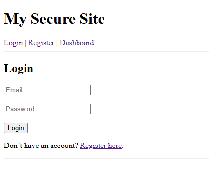
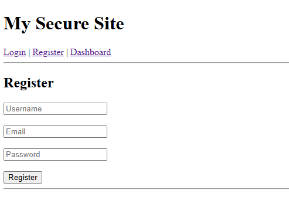
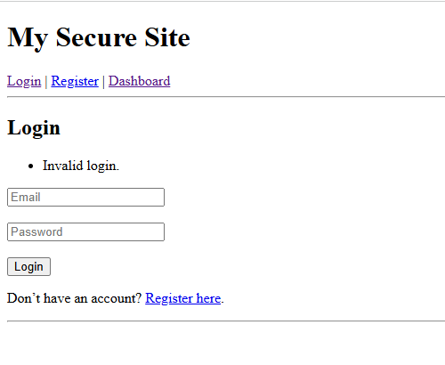
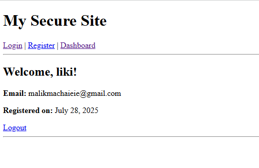

About the Project
This project is a secure user authentication system built with PHP following the MVC (Model-View-Controller) design pattern. It demonstrates how to properly handle user accounts in a web application — from registration through to login and session management — using industry-standard security practices.
The application uses bcrypt password hashing via PHP's password_hash()
function to securely store passwords in the MySQL database — meaning plain text passwords are
never stored. It also features session-based authentication to keep users logged in across pages,
and a dashboard that displays the user's account information upon successful login.
Technologies Used
Key Features
- User registration with username, email, and securely hashed password stored in MySQL
- Login system that verifies credentials using
password_verify()against the hashed password - Session-based authentication — users stay logged in across pages
- Dashboard showing user details (username, email, registration date) after login
- Invalid login handling with error messages displayed to the user
- Logout functionality that destroys the session securely
- MVC folder structure separating controllers, models, includes, and public pages
Screenshots

Login page — email and password fields

Registration page — create a new account

Invalid login — error handling in action

Dashboard — user info displayed after successful login
Sample Code
Secure password hashing on registration and verification on login:
// Register — hash password before storing in database
$hashedPassword = password_hash($_POST['password'], PASSWORD_BCRYPT);
$stmt = $pdo->prepare(
"INSERT INTO users (username, email, password)
VALUES (:username, :email, :password)"
);
$stmt->execute([
':username' => $_POST['username'],
':email' => $_POST['email'],
':password' => $hashedPassword
]);
// Login — verify password against stored hash
$stmt = $pdo->prepare("SELECT * FROM users WHERE email = :email");
$stmt->execute([':email' => $_POST['email']]);
$user = $stmt->fetch();
if ($user && password_verify($_POST['password'], $user['password'])) {
$_SESSION['user_id'] = $user['id'];
$_SESSION['username'] = $user['username'];
header('Location: dashboard.php');
} else {
$error = "Invalid login.";
}